越上山～ユガテ
| 日付 | 2026年3月29日（日） |
|---|---|
| 山域 | 奥武蔵 |
| メンバー | グループ（14名） |
| 山行形態 | 日帰り |
| アクセス | 電車 |
| ルート (Map) | 吾野駅 (9:34) - (10:44) 顔振峠 - (11:21) 越上山 - (13:03) ユガテ (13:44) - (14:27) 東吾野駅 |
子供が中学に入るのを機に登山サークルへの入会を検討する。
本日は体験登山。本当に久々のグループ登山だ。
顔振峠、越上山、ユガテはこれまでも行ったことがあるが、
そこを結ぶ道は初訪だ。
吾野駅に集合。標高185m。
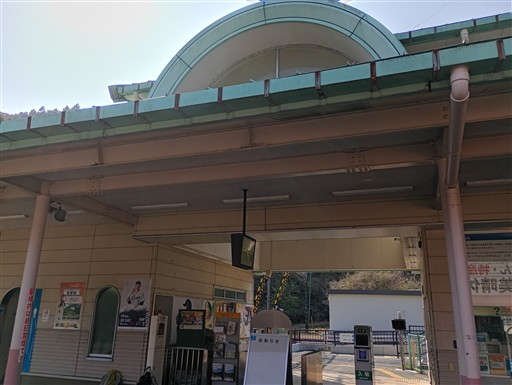
最初は車道をゾロゾロと歩いていく。
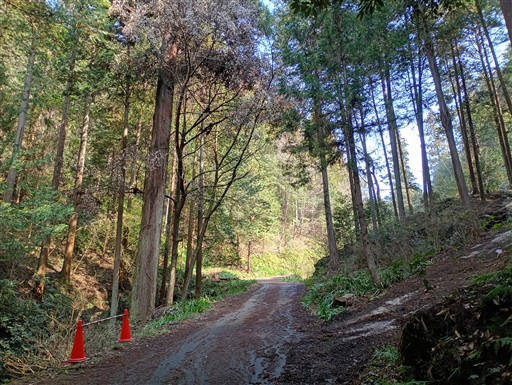
顔振峠少し手前で大展望が広がる。右に見えるのが武甲山。
景色はかなり霞んでいる。
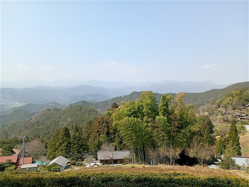
顔振峠に到着。軽く休憩。
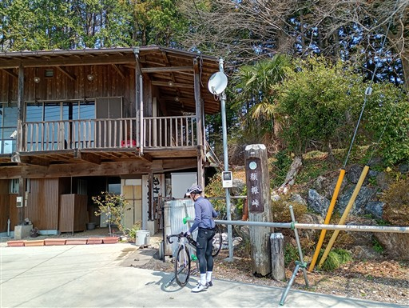
諏訪神社。
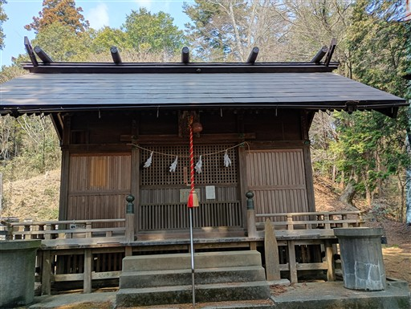
急登を越えて、超上山に到着。標高566m。
本日の最高峰だ。
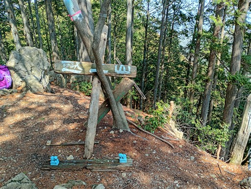
ここから小刻みなアップダウンが続く。大沢山を通過。
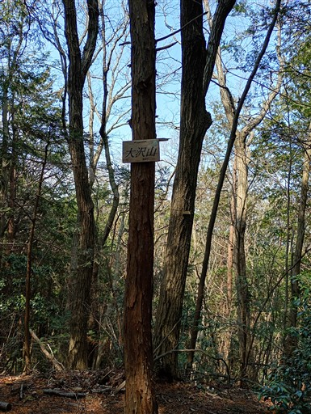
続いて茶之岳山。
会話しながら前の人に付いていくだけだと、山の記憶が全く残らない。
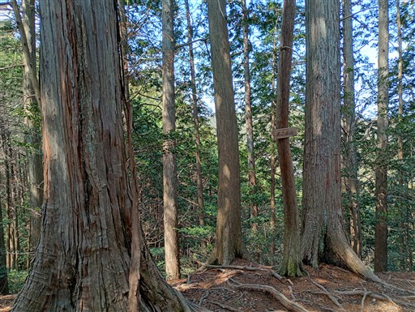
ユガテ上部に出てくる。桜の木がきれいだ。
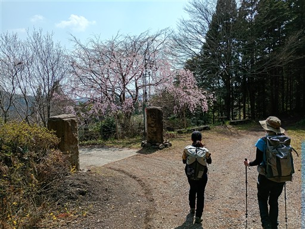
そしてユガテに到着。桃源郷と呼ばれる山村だ。
前回訪れた時は秋だったが、春もまた美しい。
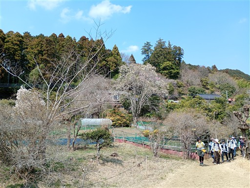
金魚が泳いでいる。
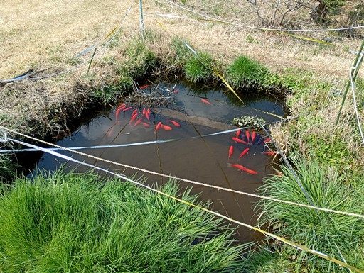
ユガテの標識。ここで昼食休憩をとる。
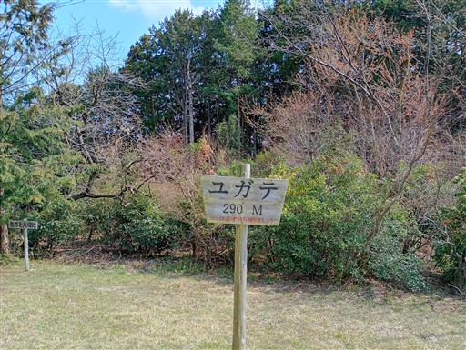
下山。あとはのんびりと車道歩きだ。
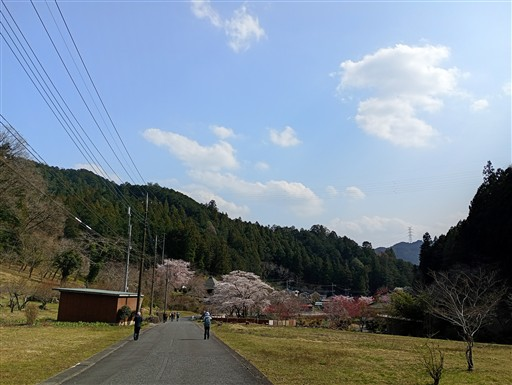
今は桜が満開。赤い花は何だろう？
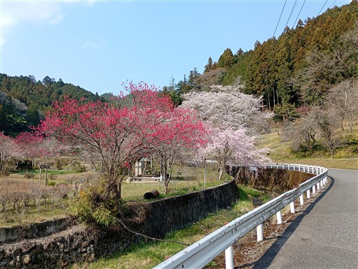
車道を歩くだけでも楽しい場所だ。
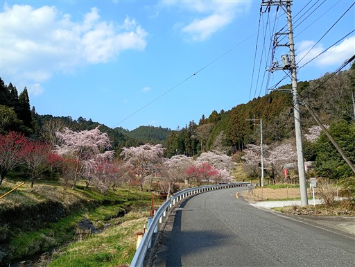
東吾野駅に到着。標高130m。
久々のグループ登山。
長らく単独か家族としか登っていなかったため、かなり新鮮な体験だった。
初対面の人たちばかりなので、そちらに集中し、山の記憶はあまり残らなかったが
いろいろお話しできて楽しい登山ができた。
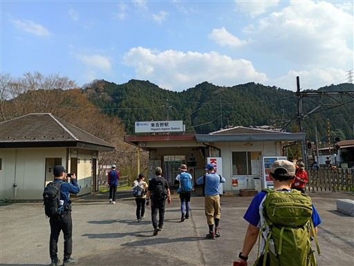
他の山行記録